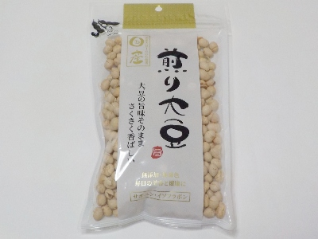

ポリポリと食べ過ぎてしまう福豊堂の煎り大豆
更新日 : 2025/03/16

軽い歯ごたえでポリポリとしていて美味しい煎り大豆です。
目の前にあるとドンドン食べてしまいますが、大豆は摂取し過ぎると体に悪影響があるかもしれないです。
私は味噌汁も飲むし納豆も食べるので、大豆イソフラボンの過剰摂取になってしまいます。特別食べたいって思った時だけ買うようにしようと思います。
福岡県福岡市東区西戸崎1丁目1番29
更新日 : 2025/03/16

軽い歯ごたえでポリポリとしていて美味しい煎り大豆です。
目の前にあるとドンドン食べてしまいますが、大豆は摂取し過ぎると体に悪影響があるかもしれないです。
私は味噌汁も飲むし納豆も食べるので、大豆イソフラボンの過剰摂取になってしまいます。特別食べたいって思った時だけ買うようにしようと思います。